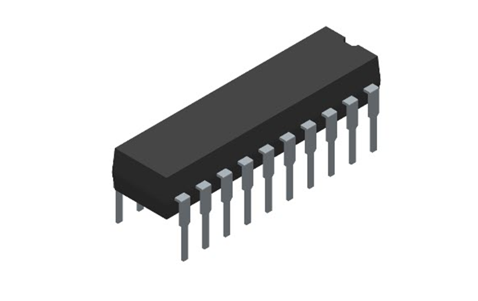

الميكروكنترولر Microcontroller:
عندما تقوم ربة المنزل بضبط غسالتها الفول أوتوماتيك على دورة غسيل معيّنة، أو غيرها من الأجهزة الأوتوماتيكيّة؛ فهي في حقيقة الأمر قامت بضبط الميكرو كونترولر الموجود بالغسالة، أو غيرها من الأجهزة؛ فهو عبارة عن: “مايكرو كمبيوتر محدّد المهام” أو “متحكّم ومراقب إلكترونيّ صغير، يتمّ برمجته لآداء مهامّ محدّدة”.
وهو منظومة إلكترونيّة دقيقة، حيث يتم تصميم دوائره وبرمجته من قبل المهندسين ليقوم بمجموعة من الوظائف المختلفة.
ويتكوّن من مجموعة من الدوائر الإلكترونيّة المتكاملة، من CPU- Central processing Unit وهي المشغّل، ثمّ Insstructio Decoder وهي وحدة التنسيق بين المشغّل وبقيّة الدوائر الإلكترونيّة بالوحدة، ووحدة المعالجة ALU، والذاكرة Accumulator لتخزين بيانات وبرامج الوحدة، وأخيرًا إلى وحدة SERS. وهو جزءٌ خاصٌّ من الذاكرة، مسئول عن التشغيل ADC، Oport، PMW، وفقًا لما هو مطلوب أو تمّ برمجته.
وظيفته:
يقوم الميكرو كونترولر بالتحكّم في الدوائر الإلكترونيّة، وفقًا لما هو مبرمج له، أو ما يتمّ برمجته عليه من قِبل المهندسين او حتى المستخدم؛ ولذا فهو يُستخدم كدائرة تحكّم في أغلب الأجهزة الأوتوماتيكيّة التي تمّ برمجتها عند التصنيع، أو ما يتمّ برمجتها من خلال الإعدادات الشخصيّة، كالتليفزيون، وجهاز الدي ڤي دي DVD، والمايكرويف، وغيره من الأجهزة القابلة للبرمجة .
